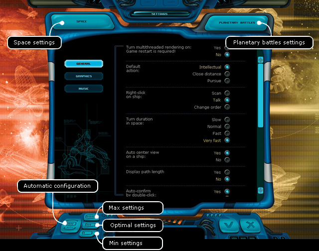

Ranger manual > Main
menu screen > Settings
|
Ranger manual > Main
menu screen > Settings
|
| Settings The 'Settings' window allows to optimize the game parameters so that, it runs smoothly on your computer. If you are an experienced user you can set all of the parameters manually (the parameter descriptions are listed below). Otherwise you can use the preset configuration buttons which would automatically set the best parameters depending on the configuration of your PC. |

| To use in-built presets for all parameters:
• Press one of the three special buttons in the left lower part of the screen. For instance if you have a Pentium III 1500 MHz or Athlon 1700+ with 512 Mb RAM, press 'Min. settings'. If you have a Pentium III 1800 MHz or Athlon 2400+ with 1 Gb RAM, press 'Max. settings'. If the parameters of your PC are somewhere between the minimal and maximal requirements, choose 'Optimal settings'. For the changes to get effective in the game: • Press 'Apply'. To leave the settings window without saving the changes: • Click 'Cancel' or press Esc. Window of the space parameters All the parameters are divided into three groups: General, Graphics and Music, you can toggle them, pressing the relevant buttons in the right upper part of the window. General Language - currently only English is available. Simplified galaxy calculation - reduction of the amount of calculations of space ships' behavior. This option is recommended for PCs with poor performance in order to increase the speed of their operation. 'Yes' - space ships 'live' in the closest three sectors, 'No' - full-scale behavior of the space ships all over the galaxy. Enable the multi-core CPU support - this option serves to equally distribute the loading of all PC cores. This option is recommeded to use in PCs with the amount of cores over 1. After applying the option you'll have to restart the game manually. Order by default - action, which your ship will perform in the space in relation to another ship, which you address with a double-click of the left mouse button. • Intellectual - AI decides, which action to perform. • Approach - approaching to another space ship as close as possible • Chase - chasing a target A right click on a space ship. You can assign three various actions to the right mouse button: • Scan - if there is a scanner on your ship, it will start scanning the target. • Chat - starts establishing the communication with the target. • Change command - change the command, which is now being performed by the ship. Day Duration. Indicates the speed of events shown within a turn. It is recommended to set the value "Slow", so that the CPU has enough time to calculate the next move during a multiday flight. Focus camera on the space ship. Controls the camera. Choose 'yes' to make the camera always follow the player's ship. Choose 'no' to leave the camera in the spot of the last mouse-click. Show the distance length. Shows the length of the distance in distance units within one turn. Allow to act after a double-click of the mouse. Controls the action, which your space ship will perform in the space, when you make a double click of the left mouse button. Amount of search results in the Ranger Center. Presets the amount of results shown in the Information Center after a search in the Ranger Center. Amount of news in the log. Presets the amount of news displayed in the news log. Flight Log (days). The higher the value of this parameter, the further back you will be able to go in your flight history and replay the past events. This parameter affects the size of the game save file. Since saving the history requires certain system resources, it is recommended to set this parameter to 1 on slow computers. Scrolling Speed. . The parameter affects the scrolling speed of the screen in the space mode, when you move your cursor to the edge of the screen. The high value of this parameter results in faster scrolling. Next Day Calculation Start. This parameter allows to set the start of calculation of the next day during a multi-day flight. The point is that once the calculation has started, you will not be able to go back in the real time by simple pressing the 'End of Turn' button. By default the parameter is set to 100%, which means automatic determination of the calculation start. When the parameter is anything less than 100%, the calculation starts exactly at the specified moment. Let's suppose the value is set to 99%, then the calculation of the next day starts only at the very end of the current day. On slow computers this may result in certain slowing-down of the system performance. When the value is set to 0%, the calculation will start right after the completion of the calculation of the current day (during the animation display on the screen), this will allow the ship to move smoothly without slowing down through a several-days flight, however if you press "End of Turn" to stop this flight, there will always be an extra day passing before the ship actually stops. Autopilot in Black Holes. Determines the time period (in sec) for switching the space ship flying in the the arcade mode into the autopilot mode. Disable the autopilot in black holes. Autopilot enabled - position 'yes', disabled - position 'no'. Graphics These parameters affect the visualization of certain graphic elements of the game and the overall graphics speed. Screen resolution - a scroller, which shows the resolution selected out of the possible ones for this configuration. The list offers the resolutions of different foramts and sizes, from 1024x768 in 4:3 and up to 1920x1200 with the aspect ratio 16:10. Vertical synchronization - synchronization of the frame rate with the vertical refresh rate of the screen. The maximal FPS with the vertical synchronization is similized to the refresh rate of the monitor. Windowed mode - allows to launch the game in the half screen mode. It is required to input in the game settings the desired resolution, which will be lower than the max. of the display. We highly recommend to enable this option, since at the resolution lower than the one of the display, the quality will remain stable. Large font in quests with high display resolutions - enables large font in the text quests. The option is effective at the vertical screen resolution of 1024. Brightness, Contrast - adjust the relevant parameters directly from the game. Background, Animation of the captains, Animation of stars, Nebulae, Satellites, spaceship trails, comets, space wind, planet clouds, planet atmosphere - disabling all or several of these parameters allows to increase the graphics output speed on slow PCs in the Space mode. Government Animation, Equipment Animation, Hagar Animation, Animated Background on the Main Screen - disabling all or several of these parameters allows to increase the graphics output speed on slow PCs in the Planet mode. Out-Of-Radar Field - normal or dimmed. Enabling the the dimmed out-of-radar field will slow down the overall graphic output in the Space mode so do not enable this option, if you have a slow computer. Degrade background - effect of focus softening for the background when one of the windows is active. Not for use on poor configurations. Dynamical positioning of the hints - allows to show a hint about an object not in the screen corner, but directly next to the cursor. FPS - this parameter allows to evaluate the graphic output speed on your computer. When enabled, the amount of 'frames per second' is displayed in the upper corner of the screen. FPS below 30 has negative effect on the eye-sight, in this case it is recommended to disable some or all graphics elements. Type of screenshots - this parameters sets the format of the screenshot. To make a screenshot press F9, doesn't work with the planetary battles. During the planetary battles make screenshots with the help of Print Screen key. Font on the gala-map - this paramters sets the font of the texts on the gala-map in the format comfortable for you. Music These parameters affect the background music and the sound effects in the game, as well as the genral performance of the game. If your PC meets only the minimal system requirements, first of all disable the music, it will spare the CPU the task of decoding the music files. The sound effects almost don't influence the performance. Sounds - on/off. Sounds in space - on/off. Sound volume - 0 through 100%. Music - on/off. Music in space - on/off. Music volume - 0 through 100%. Window of the game settings for planetary battles There are two groups here: Graphics and Music, you can toggle them by pressing the relevant buttons in the left upper part of the window. Graphics These parameters affect the visualization of certain graphic elements of the game and the overall graphics speed. Screen resolution a scroller, which shows the resolution selected out of the possible ones for this configuration. The list offers the resolutions of different foramts and sizes, from 1024õ768 in 4:3 and up to 1920õ1200 with the aspect ratio 16:10. Vertical synchronization - synchronization of the frame rate with the vertical refresh rate of the screen. The maximal FPS with the vertical synchronization is similized to the refresh rate of the monitor. Antialising - helps to remove the so-called 'ladders' on the object surfaces. Keep in mind that the antialising requires a lot of resources, which leads to an FPS drop. There is an option to adjust the level of antialising. Anisotropic filtration - helps to improve the quality of tetxtures on the tilted surfaces. There is an option to adjust the level of filtration. Visibility range - distance to the visible objects in % from the camera. Decrease of this parameter leads to the growth of performance. Brightness, Contrast - adjust the relevant parameters. Stencil and projection shadows - these are shadows from any objects on the map. Stencil shadows from robots - these are shadows produced by robots. Significantly affect the performance of the system. Highly recommended to disable this option on weak PCs. Object selection frame - ordinary and alternative. A frame is used to select several objects. You can change its appearance. The ordinary fram - bright green frame empty inside, the alternative frame - a green frame painted black inside. Metal on objects and ground - if you disable this parameter, you will not see the light play on metallic objects. Cursor Support - hardware (HW) and software (SW). With HW support the mouse movement becomes smoother. Skies - the quality of the sky texture should be selected basing on the PC power. With a powerful system you can go ahead and set this parameter to the maximum enjoying the sights of planet landscapes to the fullest. A weak PC will make you set the low quality or disable the sky to increase the performance. Music These parameters affect the background music and the sound effects in the game, as well as the genral performance of the game. If your PC meets only the minimal system requirements, first of all disable the music, it will spare the CPU the task of decoding the music files. The sound effects almost don't influence the performance. Music - on/off Music volume - 0 through 100%. Sounds - on/off. Sounds volume - 0 through 100%. |